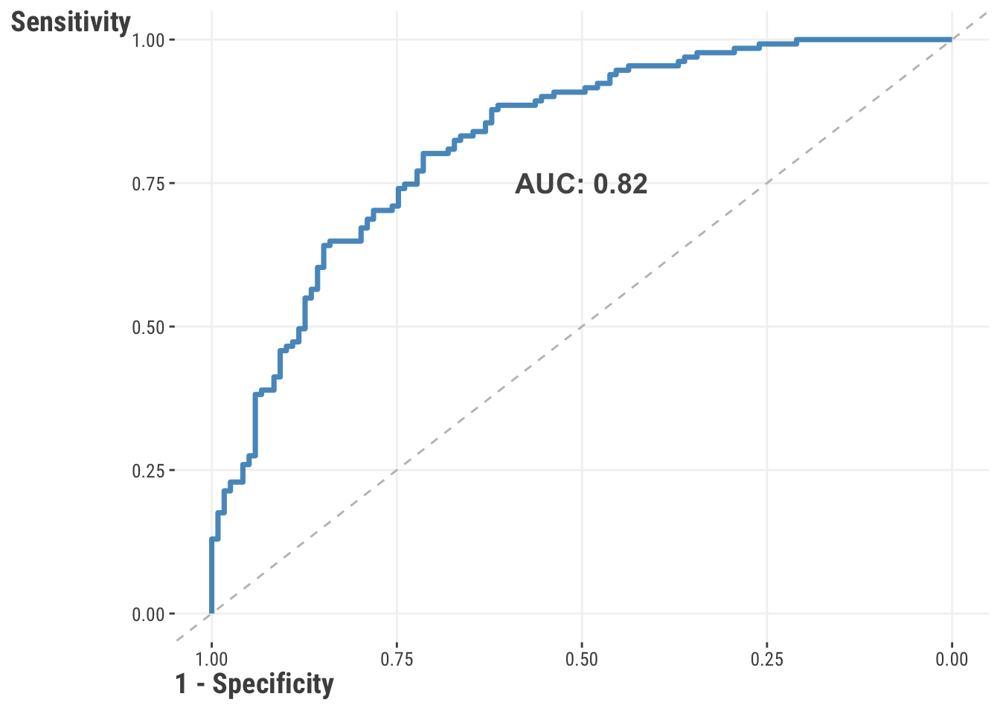
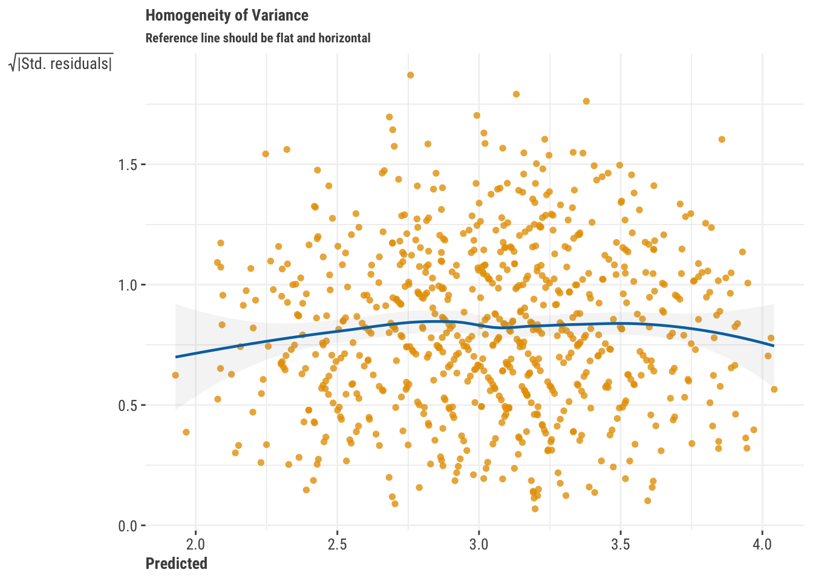
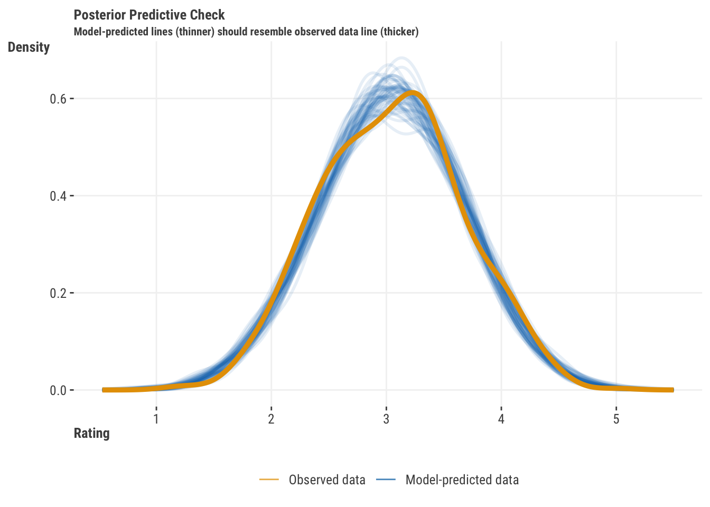
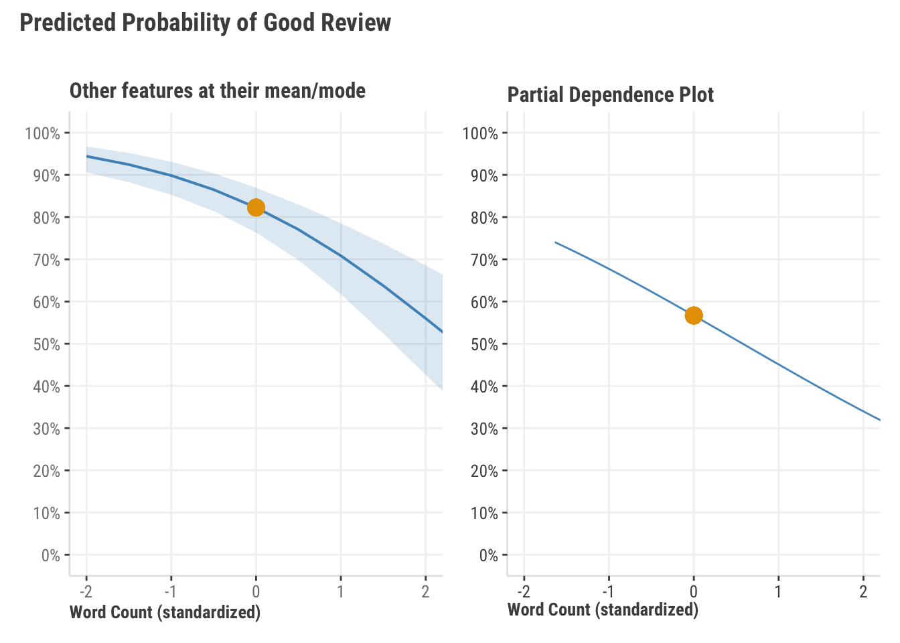
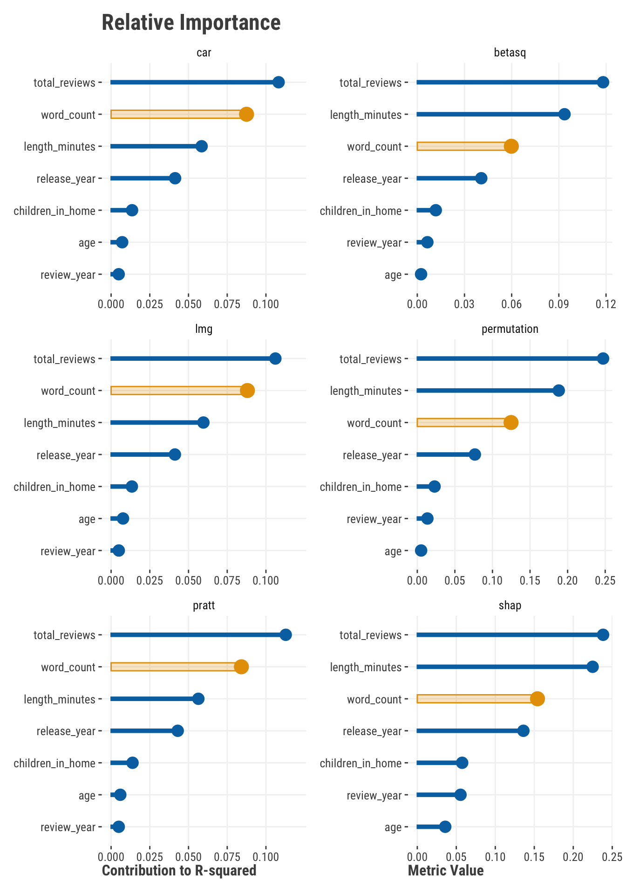

| Metric | Description | Other Names/Notes |
|---|---|---|
| Regression | ||
| RMSE | Root mean squared error | MSE (before square root) |
| MAE | Mean absolute error | |
| MAPE | Mean absolute percentage error | |
| RMSLE | Root mean squared log error | |
| R-squared | Amount of variance shared by predictions and target | Coefficient of determination |
| Deviance/AIC | Generalization of sum of squared error | Also "deviance explained" for similar R-sq interpretation |
| Classification | ||
| Accuracy | Proportion correct | Error rate is 1 - Accuracy |
| Precision | Proportion of positive predictions that are correct | Positive Predictive Value |
| Recall | Proportion of positive samples that are predicted correctly | Sensitivity, True Positive Rate |
| Specificity | Proportion of negative samples that are predicted correctly | True Negative Rate |
| Negative Predictive Value | Proportion of negative predictions that are correct | |
| F1 | Harmonic mean of precision and recall | F-Beta1 |
| AUC | Area under the ROC curve | |
| False Positive Rate | Proportion of negative samples that are predicted incorrectly | Type I Error, alpha |
| False Negative Rate | Proportion of positive samples that are predicted incorrectly | Type II Error, beta, Power is 1 - beta |
| Phi | Correlation between predicted and actual | Matthews Correlation |
| Log loss | Negative log likelihood of the predicted probabilities | |
| 1 Beta = 1 for F1 | ||
3 Knowing Your Model
In addition to giving the world one of the greatest television show theme songs – Quincy Jones’ The Streetbeater – Sanford & Son gave us an insightful quote for offering criticism: “You big dummy.” While we don’t advocate for swearing at or denigrating your model, how do you know if your model is performing up to your expectations? It is easy to look at your coefficients, t-values, and an adjusted \(R^2\), and say, “Wow! Look at this great model!” Your friends will be envious of such terrific p-values, and all of the strangers that you see at social functions will be impressed. What happens if that model falls apart on new data, though? What if a stakeholder wants to know exactly how a prediction was made for a specific business decision? Sadly, all of the stars that you gleefully pointed towards in your console will not offer you any real answers.
Instead of falling in immediate love with your model, you should ask some hard questions of it. How does it perform on different slices of data? Do predictions make sense? Is your classification cut-point appropriate? In other words, you should criticize your model before you decide it can be used for its intended purposes. Remember that it is data modeling, not data truthing. In other words, you should always be prepared to call your model a “big dummy”.
3.1 Key Ideas
- Metrics can help you assess how well your model is performing, and they can also help you compare different models.
- Different metrics can be used depending on the goals of your model.
- Visualizations can help you understand how your model is making predictions and which features are important.
- Feature importance is very difficult to ascertain even in the simplest of models, but there are tools to help you understand how much each feature contributes to a prediction.
3.1.1 Why this matters
It’s never good enough to simply get model results. You need to know how well your model is performing and how it is making predictions. You also should be comparing your model to other alternatives. Doing so provides more confidence in your model and helps you to understand how it is working, and just as importantly, where it fails. This is actionable knowledge.
3.1.2 Good to know
This takes some of the things we see in other chapters on linear models and machine learning, so we’d suggest having the linear model basics down pretty well.
3.2 Understanding the Model
A first step in understanding our model can be done with summary statistics, typically called metrics. Regression and classification have different metrics for assessing model performance. We want to give you a sample of some of the more common ones, but we also want to acknowledge that there are many more that you can use, and any might be useful. We would always recommend looking at a few different metrics for any given model to get a better sense of how your model is performing.
Table 3.1 illustrates some of the most commonly used performance metrics. Just because these are popular or applicable for your situation, doesn’t mean they are the only ones you can or even should use. Nothing keeps you from using more than one metric for assessment, and in fact, it is often a good idea to do so. You should have a working knowledge of these.
3.2.1 Regression metrics
The primary goal of our endeavor is to come up with a predictive model. The closer our model predictions are to the observed target values, the better our model is performing. As we saw in the above table, when we have a numeric target there are quite a few metrics that help us understand prediction-target correspondence, so let’s look at some of those.
But before we create a model to get us started, we are going to read in our data and then create two different splits within our data: a training set and a test set. In other words, we are going to partition our data so that we can train a model and then see how well that model performs with data it hasn’t seen1. For more on this process and the reasons why we do it see -Section 7.4 and -Section 7.6. For now, we just need to know that assessing prediction error on the test set will give us a better estimate of our metric of choice.
# all data found on github repo
df_reviews = read.csv(
'https://tinyurl.com/moviereviewsdata'
)
initial_split = sample(
x = 1:nrow(df_reviews),
size = nrow(df_reviews) * .75,
replace = FALSE
)
training_data = df_reviews[initial_split, ]
testing_data = df_reviews[-initial_split, ]import pandas as pd
import numpy as np
from sklearn.model_selection import train_test_split
# all data found on github repo
df_reviews = pd.read_csv(
'https://tinyurl.com/moviereviewsdata'
)
training_data, testing_data = train_test_split(
df_reviews,
test_size = 0.25,
random_state = 123
)You’ll notice that we created training data with 75% of our data and we will use the other 25% to test our model. With training data in hand, let’s produce a model to predict review rating. We’ll use the standardized (scaled _sc) versions of several features, and use the ‘year’ features starting at year 0, which is the earliest year in our data. Finally, we also include the genre of the movie as a categorical feature.
model_train_reg = lm(
rating ~
review_year_0
+ release_year_0
+ age_sc
+ length_minutes_sc
+ total_reviews_sc
+ word_count_sc
+ genre
,
training_data
)import statsmodels.api as sm
import statsmodels.formula.api as smf
# we'll use 'features' later also
features = [
"review_year_0",
"release_year_0",
"age_sc",
"length_minutes_sc",
"total_reviews_sc",
"word_count_sc",
"genre",
]
model = 'rating ~ ' + " + ".join(features)
model_train_reg = smf.ols(
formula = model,
data = training_data
).fit()Now that we have a model on our training data, we can use it to make predictions on our test data:
predictions = predict(model_train_reg, newdata = testing_data)predictions = model_train_reg.predict(testing_data)The goal now is to find out how close our predictions match reality. Let’s look at them first:

Obviously, our points do not make a perfect line on the left, which would indicate perfect prediction. Also, the distribution of our values suggests we’re over predicting on the lower end and under predicting on the higher end of the target’s range. But we’d like to determine how far off we are in a general sense. There are a number of metrics that can be used to measure this. We’ll go through a few of them here.
3.2.1.1 R-squared
Anyone that has done linear regression has come across the \(R^2\) value. It is a measure of how well the model explains the variance in the target. One way to calculate it is as follows:
\[R^2 = 1 - \frac{\sum_{i=1}^{n}(y_i - \hat{y}_i)^2}{\sum_{i=1}^{n}(y_i - \bar{y})^2}\]
where \(y_i\) is the observed value, \(\hat{y}_i\) is the predicted value, and \(\bar{y}\) is the mean of the observed values. The \(R^2\) value is a measure of how much variance in the target (the denominator) is attributable to the model’s predictions (numerator). It is a value between 0 and 1, with 1 indicating that the model explains all of the variance in the target.
More simply, \(R^2\) is the squared correlation of our predicted values and the target. In that sense it can almost always be useful as a descriptive measure, just like we use means and standard deviations in exploratory data analysis. However, it is not so great at telling us about predictive quality. Why? Take your predictions from our rating model, and add 10 to them, or make them all negative. In both cases your predictions would be ridiculous, but your \(R^2\) will be the same. Another problem is that for training data, \(R^2\) will always increase as you add more features to your model, whether they are useful or pure noise! This is why we use other metrics to assess predictive quality.
residual_ss = sum((testing_data$rating - predictions)^2)
total_ss = sum((testing_data$rating - mean(testing_data$rating))^2)
1 - residual_ss / total_ss[1] 0.434688yardstick::rsq_trad_vec(testing_data$rating, predictions)[1] 0.434688# conceptually identical, but slight difference due to how internal calculations are done
cor(testing_data$rating, predictions)^2 [1] 0.4367101yardstick::rsq_vec(testing_data$rating, predictions)[1] 0.4367101from sklearn.metrics import r2_score
residual_ss = np.sum((testing_data.rating - predictions)**2)
total_ss = np.sum((testing_data.rating - np.mean(testing_data.rating))**2)
1 - residual_ss / total_ss0.508431158347433r2_score(testing_data.rating, predictions)0.508431158347433# conceptually identical, but slight difference due to how calculations are done
np.corrcoef(testing_data.rating, predictions)[0, 1]**20.51473296324532663.2.1.2 Mean squared error
One of the most common performance metrics for numeric targets is the mean squared error (MSE) and its square root, root mean squared error (RMSE). The MSE is the average of the squared differences between the predicted and actual values. It is calculated as follows:
\[\text{MSE} = \frac{1}{n}\sum_{i=1}^{n}(y_i - \hat{y}_i)^2\]
MSE penalizes large errors more- since errors are squared, the larger the error, the larger the penalty. As mentioned, the root mean squared error (RMSE) is just the square root of the MSE. Like MSE, RMSE likewise penalizes large errors, but if you want a metric that is in the same units as the original target data, RMSE is the metric for you. It is calculated as follows:
\[\text{RMSE} = \sqrt{\text{MSE}}\]
mean((testing_data$rating - predictions)^2)[1] 0.2212043yardstick::rmse_vec(testing_data$rating, predictions)^2[1] 0.2212043sqrt(mean((testing_data$rating - predictions)^2))[1] 0.4703237yardstick::rmse_vec(testing_data$rating, predictions)[1] 0.4703237from sklearn.metrics import mean_squared_error
np.mean((testing_data.rating - predictions)**2)0.20798285555421575mean_squared_error(testing_data.rating, predictions)0.20798285555421575np.sqrt(np.mean((testing_data.rating - predictions)**2))0.4560513738102493mean_squared_error(testing_data.rating, predictions, squared = False)0.45605137381024933.2.1.3 Mean absolute error
The mean absolute error (MAE) is the average of the absolute differences between the predicted and observed values. It is calculated as follows:
\[\text{MAE} = \frac{1}{n}\sum_{i=1}^{n}|y_i - \hat{y}_i|\]
MAE is a great metric when all you really want to know is how far off your predictions are from the observed values. It is not as sensitive to large errors as the MSE.
mean(abs(testing_data$rating - predictions))[1] 0.3715744yardstick::mae_vec(testing_data$rating, predictions)[1] 0.3715744from sklearn.metrics import mean_absolute_error
np.mean(abs(testing_data.rating - predictions))0.3704072983307527mean_absolute_error(testing_data.rating, predictions)0.37040729833075273.2.1.4 Mean absolute percentage error
The mean absolute percentage error (MAPE) is the average of the absolute differences between the predicted and observed values, expressed as a percentage of the observed values. It is calculated as follows:
\[MAPE = \frac{1}{n}\sum_{i=1}^{n}\frac{|y_i - \hat{y}_i|}{y_i}\]
mean(
abs(testing_data$rating - predictions) /
testing_data$rating
) * 100[1] 13.60579yardstick::mape_vec(testing_data$rating, predictions)[1] 13.60579from sklearn.metrics import mean_absolute_percentage_error
np.mean(
abs(testing_data.rating - predictions) /
testing_data.rating
) * 10013.464399850975898mean_absolute_percentage_error(testing_data.rating, predictions) * 10013.4643998509758983.2.1.5 Which regression metric should I use?
In the end, it won’t hurt to look at a few of these metrics to get a better idea of how well your model is performing. You will always be using these metrics to compare different models, so use a few of them to get a better sense of how well your models are performing relative to one another. Does adding a feature help drive down RMSE, indicating that the feature helps to reduce large errors? In other words, does adding complexity to your model provide a big reduction in error? If adding features doesn’t help reduce error, do you really need to include it in your modelU+0203D;
3.2.2 Classification metrics
Whenever we are classifying outcomes, we don’t have the same ability to compare a predicted score to an observed score – instead, we are going to use the predicted probability of an outcome, establish a cut-point for that probability, convert everything below that cut-point to 0, and then convert everything at or above that cut-point to 1. We can then compare a table predicted versus target classes, typically called a confusion matrix2.
Let’s start with a model to predict whether a review is “good” or “bad”. We will use the same training and testing data that we created above.
model_train_class = glm(
rating_good ~
genre + review_year_0
+ release_year_0
+ age_sc
+ length_minutes_sc
+ total_reviews_sc
+ word_count_sc
+ genre
,
training_data,
family = binomial
)
summary(model_train_class)
Call:
glm(formula = rating_good ~ genre + review_year_0 + release_year_0 +
age_sc + length_minutes_sc + total_reviews_sc + word_count_sc +
genre, family = binomial, data = training_data)
Coefficients:
Estimate Std. Error z value Pr(>|z|)
(Intercept) -2.08587 0.44543 -4.683 2.83e-06 ***
genreComedy 2.46085 0.42450 5.797 6.75e-09 ***
genreDrama 2.24359 0.27206 8.247 < 2e-16 ***
genreHorror 0.12927 0.43095 0.300 0.764201
genreKids -0.44002 0.40783 -1.079 0.280621
genreOther 0.40969 0.36361 1.127 0.259860
genreRomance 0.19007 0.35944 0.529 0.596941
genreSci-Fi 0.11738 0.45628 0.257 0.796983
review_year_0 0.05238 0.01854 2.826 0.004711 **
release_year_0 0.02914 0.01072 2.720 0.006536 **
age_sc -0.34468 0.09738 -3.539 0.000401 ***
length_minutes_sc 0.70878 0.11015 6.435 1.24e-10 ***
total_reviews_sc 1.05932 0.11550 9.171 < 2e-16 ***
word_count_sc -0.52225 0.10442 -5.001 5.69e-07 ***
---
Signif. codes: 0 '***' 0.001 '**' 0.01 '*' 0.05 '.' 0.1 ' ' 1
(Dispersion parameter for binomial family taken to be 1)
Null deviance: 1022.33 on 749 degrees of freedom
Residual deviance: 704.72 on 736 degrees of freedom
AIC: 732.72
Number of Fisher Scoring iterations: 5# for later
y_target_testing_bin = ifelse(testing_data$rating_good == "good", 1, 0)import statsmodels.api as sm
import statsmodels.formula.api as smf
model = 'rating_good ~ ' + " + ".join(features)
model_train_class = smf.glm(
formula = model,
data = training_data,
family = sm.families.Binomial()
).fit()
model_train_class.summary() | Dep. Variable: | rating_good | No. Observations: | 750 |
| Model: | GLM | Df Residuals: | 736 |
| Model Family: | Binomial | Df Model: | 13 |
| Link Function: | Logit | Scale: | 1.0000 |
| Method: | IRLS | Log-Likelihood: | -367.76 |
| Date: | Sun, 28 Jul 2024 | Deviance: | 735.52 |
| Time: | 17:52:18 | Pearson chi2: | 672. |
| No. Iterations: | 5 | Pseudo R-squ. (CS): | 0.3189 |
| Covariance Type: | nonrobust |
| coef | std err | z | P>|z| | [0.025 | 0.975] | |
| Intercept | -1.7239 | 0.439 | -3.931 | 0.000 | -2.583 | -0.864 |
| genre[T.Comedy] | 2.4492 | 0.448 | 5.462 | 0.000 | 1.570 | 3.328 |
| genre[T.Drama] | 1.9952 | 0.256 | 7.789 | 0.000 | 1.493 | 2.497 |
| genre[T.Horror] | -0.0215 | 0.397 | -0.054 | 0.957 | -0.799 | 0.756 |
| genre[T.Kids] | -0.1908 | 0.358 | -0.533 | 0.594 | -0.893 | 0.511 |
| genre[T.Other] | 0.0147 | 0.363 | 0.041 | 0.968 | -0.696 | 0.726 |
| genre[T.Romance] | 0.1751 | 0.385 | 0.455 | 0.649 | -0.579 | 0.929 |
| genre[T.Sci-Fi] | 0.2399 | 0.416 | 0.577 | 0.564 | -0.575 | 1.055 |
| review_year_0 | 0.0272 | 0.018 | 1.529 | 0.126 | -0.008 | 0.062 |
| release_year_0 | 0.0355 | 0.011 | 3.370 | 0.001 | 0.015 | 0.056 |
| age_sc | -0.2167 | 0.094 | -2.296 | 0.022 | -0.402 | -0.032 |
| length_minutes_sc | 0.5661 | 0.106 | 5.360 | 0.000 | 0.359 | 0.773 |
| total_reviews_sc | 0.9022 | 0.109 | 8.312 | 0.000 | 0.689 | 1.115 |
| word_count_sc | -0.5834 | 0.106 | -5.522 | 0.000 | -0.790 | -0.376 |
| Dep. Variable: | rating_good | No. Observations: | 750 |
| Model: | GLM | Df Residuals: | 736 |
| Model Family: | Binomial | Df Model: | 13 |
| Link Function: | Logit | Scale: | 1.0000 |
| Method: | IRLS | Log-Likelihood: | -367.76 |
| Date: | Sun, 28 Jul 2024 | Deviance: | 735.52 |
| Time: | 17:52:18 | Pearson chi2: | 672. |
| No. Iterations: | 5 | Pseudo R-squ. (CS): | 0.3189 |
| Covariance Type: | nonrobust |
| coef | std err | z | P>|z| | [0.025 | 0.975] | |
| Intercept | -1.7239 | 0.439 | -3.931 | 0.000 | -2.583 | -0.864 |
| genre[T.Comedy] | 2.4492 | 0.448 | 5.462 | 0.000 | 1.570 | 3.328 |
| genre[T.Drama] | 1.9952 | 0.256 | 7.789 | 0.000 | 1.493 | 2.497 |
| genre[T.Horror] | -0.0215 | 0.397 | -0.054 | 0.957 | -0.799 | 0.756 |
| genre[T.Kids] | -0.1908 | 0.358 | -0.533 | 0.594 | -0.893 | 0.511 |
| genre[T.Other] | 0.0147 | 0.363 | 0.041 | 0.968 | -0.696 | 0.726 |
| genre[T.Romance] | 0.1751 | 0.385 | 0.455 | 0.649 | -0.579 | 0.929 |
| genre[T.Sci-Fi] | 0.2399 | 0.416 | 0.577 | 0.564 | -0.575 | 1.055 |
| review_year_0 | 0.0272 | 0.018 | 1.529 | 0.126 | -0.008 | 0.062 |
| release_year_0 | 0.0355 | 0.011 | 3.370 | 0.001 | 0.015 | 0.056 |
| age_sc | -0.2167 | 0.094 | -2.296 | 0.022 | -0.402 | -0.032 |
| length_minutes_sc | 0.5661 | 0.106 | 5.360 | 0.000 | 0.359 | 0.773 |
| total_reviews_sc | 0.9022 | 0.109 | 8.312 | 0.000 | 0.689 | 1.115 |
| word_count_sc | -0.5834 | 0.106 | -5.522 | 0.000 | -0.790 | -0.376 |
Now that we have our model trained, we can use it to get the predicted probabilities for each observation3.
predicted_prob = predict(
model_train_class,
newdata = testing_data,
type = "response"
)predicted_prob = model_train_class.predict(testing_data)We are going to take those probability values and make a decision to convert everything at or above .5 to the positive class (a “good” review). It is a bold assumption, but one that we will make at first!
predicted_class = ifelse(predicted_prob >= .5 , 1, 0)predicted_class = np.where(predicted_prob >= .5, 1, 0)
predicted_class = pd.Series(predicted_class)3.2.2.1 Confusion matrix
The confusion matrix is a table that shows the number of correct and incorrect predictions made by the model. As we’ll see, it’s easy enough to get one from scratch, but we recommend using a function that will give you a nice table and all of the metrics you need along with it. To get us started, we can use a package function that will take our predictions and observed target as input to create the table.
| True 0 | True 1 | |
|---|---|---|
| Predicted 0 | TN: 81 | FN: 25 |
| Predicted 1 | FP: 38 | TP: 106 |
TN: A True Negative is an outcome where the model correctly predicts the negative class – the model correctly predicted that the review was not good.
FN: A False Negative is an outcome where the model incorrectly predicts the negative class – the model incorrectly predicted that the review was not good.
FP: A False Positive is an outcome where the model incorrectly predicts the positive class – the model incorrectly predicted that the review was good.
TP: A True Positive is an outcome where the model correctly predicts the positive class – the model correctly predicted that the review was good.
In an ideal world, we would have all of our observations fitting nicely in the diagonal of that table. Unfortunately, we don’t live in that world and the more values we have in the off diagonal (i.e., in the FN and FP spots), the worse our model is at classifying outcomes.
Let’s look at some metrics that will help to see if we’ve got a suitable model or not. We’ll describe each, then show them all after.
3.2.2.2 Accuracy
Accuracy’s allure is in its simplicity and because we use it for so many things in our everyday affairs. The accuracy is the proportion of correct predictions made by the model. Of all the metrics to assess the quality of classification, accuracy is the easiest to cheat. If you have any class imbalance (i.e., one class within the target has far more observations than the other), you can get a high accuracy by simply predicting the majority class all of the time! To get around the false sense of confidence that accuracy alone can promote, we can look at a few other metrics.
3.2.2.3 Sensitivity/Recall/True positive rate
Sensitivity, also known as recall or the true positive rate, is the proportion of observed positives that are correctly predicted by the model. If your focus is on the positive class above all else, sensitivity is the metric for you.
3.2.2.4 Specificity/True negative rate
Specificity, also known as the true negative rate, is the proportion of observed negatives that are correctly predicted as such. If you want to know how well your model will work with the negative class, specificity is a great metric.
3.2.2.5 Precision/Positive predictive value
The precision is the proportion of positive predictions that are correct, and is often a key metric in many business use cases. While similar to sensitivity, precision focuses on positive predictions, while sensitivity focuses on observed positive cases.
3.2.2.6 Negative predictive value
The negative predictive value is the proportion of negative predictions that are correct, and is the complement to precision.
Let’s see how we’d do this ourselves. We’ll create a basic confusion matrix then extract the values to create the metrics we need.
confusion_matrix = table(
predicted_class,
testing_data$rating_good
)
TN = confusion_matrix[1, 1]
TP = confusion_matrix[2, 2]
FN = confusion_matrix[1, 2]
FP = confusion_matrix[2, 1]
acc = (TP + TN) / sum(confusion_matrix) # accuracy
tpr = TP / (TP + FN) # sensitivity, true positive rate, recall
tnr = TN / (TN + FP) # specificity, true negative rate
ppv = TP / (TP + FP) # precision, positive predictive value
npv = TN / (TN + FN) # negative predictive valueconfusion_matrix = pd.crosstab(
predicted_class,
testing_data.rating_good.reset_index(drop=True),
).to_numpy()
TN = confusion_matrix[0, 0]
TP = confusion_matrix[1, 1]
FN = confusion_matrix[0, 1]
FP = confusion_matrix[1, 0]
acc = (TP + TN) / np.sum(confusion_matrix) # accuracy
tpr = TP / (TP + FN) # sensitivity, true positive rate, recall
tnr = TN / (TN + FP) # specificity, true negative rate
ppv = TP / (TP + FP) # precision, positive predictive value
npv = TN / (TN + FN) # negative predictive valueNow that we have a sense of some metrics, let’s get a confusion matrix and stats using packages that will give us a lot of these metrics at once. In both cases we have an 0/1 integer where 0 is a rating of “bad” and 1 is “good”.
We use mlr3verse in the ML chapters, so we’ll use it here too. Though our predictions are 0/1, we need to convert it to a factor for this function.
# note the columns and rows are reversed from our previous confusion matrix
cm = mlr3measures::confusion_matrix(
factor(testing_data$rating_good), # requires a factor
factor(predicted_class),
positive = "1" # class 1 is 'good'
)
tibble(
metric = c('ACC', 'TPR', 'TNR', 'PPV', 'NPV'),
ours = c(acc, tpr, tnr, ppv, npv),
package = cm$measures[c('acc', 'tpr', 'tnr', 'ppv', 'npv')]
)# A tibble: 5 × 3
metric ours package
<chr> <dbl> <dbl>
1 ACC 0.748 0.748
2 TPR 0.809 0.809
3 TNR 0.681 0.681
4 PPV 0.736 0.736
5 NPV 0.764 0.764We find pycm to be a great package for this purpose, practically every metric you can think of is available. You can also use sklearn.metrics and its corresponding classification_report function.
from pycm import ConfusionMatrix
cm = ConfusionMatrix(
testing_data.rating_good.to_numpy(),
predicted_class.to_numpy(),
digit = 3
)
# print(cm) # lots of stats!
package_result = [
cm.class_stat[stat][1] # get results specific to class 1
for stat in ['ACC', 'TPR', 'TNR', 'PPV', 'NPV']
]
pd.DataFrame({
'metric':['ACC', 'TPR', 'TNR', 'PPV', 'NPV'],
'ours': [acc, tpr, tnr, ppv, npv],
'package': package_result
}) metric ours package
0 ACC 0.796 0.796
1 TPR 0.857 0.857
2 TNR 0.726 0.726
3 PPV 0.781 0.781
4 NPV 0.817 0.817Some additional measures we might look at include the following. Those with an asterisk are also in table Table 3.1.
- Kappa: A measure of how much better the model is than random guessing.
- Prevalence: The proportion of actual positives in the data. If you don’t know this, accuracy is fairly meaningless.
- Balanced Accuracy: The average of the sensitivity (TPR) and specificity (TNR). Typically a better measure than accuracy when there is class imbalance.
- F1*: The harmonic mean of precision and recall.
- AUC*: The area under the ROC curve. We’ll talk about this next.
3.2.2.7 Ideal decision points for classification
Earlier when we obtained the predicted class, and then all the metrics based on it, we used a predicted probability value of 0.5 as a cutoff for a ‘good’ vs. a ‘bad’ rating, and this is usually the default if we don’t specify it. Assuming that this is the best for a given situation is actually a pretty bold assumption on our part, and we should probably make sure that the cut-off value we choose is going to offer us the best result given the modeling context.
But what is the ‘best’ result? That’s going to depend on the situation. If we are predicting whether a patient has a disease, we might want to minimize false negatives, since if we miss the diagnosis, the patient could be in serious trouble. Meanwhile if we are predicting whether a transaction is fraudulent, we might want to minimize false positives, since if we flag a transaction as fraudulent when it isn’t, we could be causing a lot of trouble for the customer. In other words, we might want to maximize sensitivity or specificity, respectively.
Whatever we decide, we ultimately are just shifting the metrics around relative to one another. As an easy example, if we were to classify all of our observations as ‘good’, we would have a sensitivity of 1 because all good ratings would be classified correctly. However, our positive predictive value would not be 1, and we’d have a specificity of 0. No matter which cutpoint we choose, we are going to have to make a tradeoff between these metrics.
Where this comes into play is with model selection, where we choose a model based on a particular metric, and something we will talk about very soon. If we are comparing models based on accuracy, we might choose a different model than if we are comparing based on sensitivity. And given a particular threshold, we might choose a different model based on the same metric, than we would have with a different threshold.
To help us with the task of choosing a threshold, we will start by creating what’s called a Receiver Operating Characteristic (ROC) curve. This curve plots the true positive rate (TPR) against the false positive rate (FPR) at various threshold settings. The area under the curve (AUC) is a measure of how well the model is able to distinguish between the two classes. The closer the AUC is to 1, the better the model is at distinguishing between the two classes. The AUC is a very popular metric because it is not sensitive to our threshold, and actually concerns two metrics we are often interested in4.
roc = performance::performance_roc(model_train_class, new_data = testing_data)
roc
# requires the 'see' package
plot(roc) from sklearn.metrics import roc_curve, auc, RocCurveDisplay
fpr, tpr, thresholds = roc_curve(
testing_data.rating_good,
predicted_prob
)
RocCurveDisplay(fpr=fpr, tpr=tpr).plot()auc(fpr, tpr)

With ROC curves and AUC values in hand, now we can find the ideal cut-point for balancing the TPR and FPR. There are different ways to do this, but one common way is to use the Youden’s J statistic, which both of the following do.
# produces the same value as before
roc_ = pROC::roc(testing_data$rating_good, predicted_prob)
threshold = pROC::coords(roc_, "best", ret = "threshold")
predictions = ifelse(
predict(model_train_class, testing_data, type='response') >= threshold$threshold,
1,
0
)
cm_new = mlr3measures::confusion_matrix(
factor(testing_data$rating_good),
factor(predictions),
positive = "1"
)
tibble(
threshold = threshold,
TNR = cm_new$measures['tnr'],
TPR = cm_new$measures['tpr']
)# A tibble: 1 × 3
threshold$threshold TNR TPR
<dbl> <dbl> <dbl>
1 0.508 0.714 0.802cut = thresholds[np.argmax(tpr - fpr)]
pd.DataFrame({
'threshold': [cut],
'TNR': [1 - fpr[np.argmax(tpr - fpr)]],
'TPR': [tpr[np.argmax(tpr - fpr)]]
}) threshold TNR TPR
0 0.483 0.726 0.887The result is a “best” decision cut-point for converting our predicted probabilities to classes, though again, there are different and equally valid ways of going about this. The take home point is that instead of being naive about setting our probability to .5, this will provide a cut-point that will lead to a more balanced result that recognizes other metrics that are important beyond accuracy. We will leave it to you to take that ideal cut-point value and update your metrics to see how much of a difference it will make.
Note that this only changes the values relative to one another, not the overall performance of the model - the actual predicted probabilities don’t change after all. For example, accuracy may go down while recall increases. You’ll need to match these metrics to your use case to see if the change is worth it. Whether it is a meager, modest, or meaningful improvement is going to vary from situation to situation, as will how you determine if your model is “good” or “bad”. Is this a good model? Are you more interested in correctly identifying the positive class, or the negative class? Are you more interested in avoiding false positives/negatives? These are all questions that you will need to answer depending on the modeling context.
3.2.3 Model selection & comparison
Another important way to understand our model is by looking at how it compares to other models in terms of performance, however we choose to define that. One common way we can do this is by comparing models based on the metric(s) of our choice, for example, with RMSE or AUC. Let’s see this in action for our regression model. Here we will compare three models: one with three features, our original model, and the three feature model with interactions with genre. Our goal will be to see how these perform on the test set based on RMSE.
# create the models
model_3 = lm(
rating ~ review_year_0 + release_year_0 + age_sc,
training_data
)
model_3_int = lm(
rating ~ review_year_0 * genre + release_year_0 * genre + age_sc * genre,
training_data
)
model_train_reg = lm(
rating ~
review_year_0
+ release_year_0
+ age_sc
+ length_minutes_sc
+ total_reviews_sc
+ word_count_sc
+ genre
,
training_data
)
# get the predictions, calculate RMSE
result = map(
list(model_3, model_train_reg, model_3_int),
~ predict(.x, newdata = testing_data)
) |>
map_dbl(
~ yardstick::rmse_vec(testing_data$rating, .)
)import statsmodels.formula.api as smf
from sklearn.metrics import root_mean_squared_error
# create the models
model_3 = smf.ols(
formula='rating ~ review_year_0 + release_year_0 + age_sc',
data=training_data
).fit()
model_3_int = smf.ols(
formula='rating ~ review_year_0 * genre + release_year_0 * genre + age_sc * genre',
data=training_data
).fit()
model_train_reg = smf.ols(
formula=
'''
rating ~
review_year_0
+ release_year_0
+ age_sc
+ length_minutes_sc
+ total_reviews_sc
+ word_count_sc
+ genre
'''
,
data=training_data
).fit()
# get the predictions, calculate RMSE
models = [model_3, model_train_reg, model_3_int]
result = [
root_mean_squared_error(
testing_data.rating,
model.predict(testing_data[features])
)
for model in models
]| model | rmse |
|---|---|
| original | 0.47 |
| 3 feat+interact | 0.56 |
| 3 features | 0.61 |
In this case, the three feature model does worst, but adding interactions of those features with genre improves the model. However, we see that our original model with 7 features has the lowest RMSE, indicating that it is the best model under these circumstances. This is a simple example, but it is a typical way to compare models that you would use frequently. The same approach would work for classification models, just using an appropriate metric like AUC or F1.
Another thing to consider is that even with a single model, the model fitting procedure is always comparing a model with the current parameter estimates, or more generally the current objective function value, to a previous one with other parameter estimates or objective function value. In this case, our goal is model selection, or how we choose the best result from a single model. While this is an automatic process here, the details of how this actually happens is the focus of Chapter 4. In other cases, we are selecting models through the process of cross-validation (Section 7.6), but the idea is largely the same in that we are comparing our current parameter estimates to other possibilities. We are always doing model selection and comparison, and as such we’ll be demonstrating these often.
3.2.4 Model visualization
A key method for understanding how our model is performing is through visualization. You’ll recall that we started out way back by look at the predicted values against the observed values to see if there was any correspondence (Figure 2.3), but another key way to understand our model is to look at the residuals, or errors in prediction, which again is the difference in our prediction versus the observed value. Here are a couple plots that can help us understand our model:
- Residuals vs. Fitted: This type of plot shows predicted values vs. the residuals (or some variant of the residuals, like their square root). If you see a pattern, that potentially means your model is not capturing something in the data. For example, if you see a funnel shape, that would suggest that you are systematically having worse predictions for some part of the data. For some plots, patterns may suggest an underlying nonlinear relationship in the data is yet to be uncovered. For our main regression model, we don’t see any patterns which would indicate that the model has a notable prediction issue of some kind.

- Training/Test Performance: For iterative approaches like deep learning, we may want to see how our model is performing across iterations, typically called epochs. We can look at the training and testing performance to see if our model is overfitting or underfitting. We can actually do this with standard models as well if the estimation approach is iterative, but it’s not as common. We can also visualize performance across samples of the data, such as in cross-validation. The following shows performance for a model similar to the MLP model demonstrated later (Section 8.7), where we can see we get to a relatively low objective function value after just a few epochs.

- Posterior Predictive Check: This is a basic comparison of predicted vs. observed target values. We simulate the target based on the model parameter estimates and their uncertainty, and compare that distribution to the observed target distribution. If the two distributions are similar, then the model is doing a good job of capturing the target distribution. This plot is ubiquitous in Bayesian modeling, but can be used for any model that has uncertainty estimates or is otherwise able to generate random draws of the target distribution. For our regression model, our predictions match the target distribution well.

- Other Plots: Other plots may look at the distribution of residuals, check for extreme values, see if there is an overabundance of zero values, and other issues, some of which may be specific to the type of model you are using.
The following shows how to get a residuals vs. fitted plot and a posterior predictive check.
performance::check_model(model_train_reg, check = c('linearity', 'pp_check'))import seaborn as sns
import matplotlib.pyplot as plt
sns.residplot(
x = model_train_reg.fittedvalues,
y = training_data.rating,
lowess = True,
line_kws={'color': 'red', 'lw': 1}
)
plt.xlabel('Fitted values')
plt.ylabel('Residuals')
plt.title('Residuals vs. Fitted')
plt.show()
# get the model parameters
pp = model_train_reg.model.get_distribution(
params = model_train_reg.params,
scale = model_train_reg.scale,
exog = model_train_reg.model.exog
)
# Generate 10 simulated predictive distributions
pp_samples = [pp.rvs() for _ in range(10)]
# Plot the distribution of pp_samples
for sample in pp_samples:
sns.kdeplot(sample, label='pp.rvs()', alpha=0.25)
# Overlay the density plot of training_data.rating
sns.kdeplot(
training_data.rating.to_numpy(),
label='training_data.rating',
linewidth=2
)
plt.xlabel('Rating')
plt.ylabel('Density')
plt.title('Distribution of predictions vs. observed rating')
plt.show()3.3 Understanding the Features
Assuming our model is adequate, let’s now turn our attention to the features. There’s a lot to unpack here, so let’s get started!
3.3.1 Basic model parameters
We saw in the linear model chapter (2.6.1) that we can get a lot out of the basic output from standard linear models. Our starting point should be the coefficients or weights, which can give us a sense of the direction and magnitude of the relationship between the feature and the target given their respective scales. We can also look at the standard errors and confidence intervals to get a sense of the uncertainty in those estimates. Here is a basic summary of the coefficients for our regression model on the training data.
| feature | estimate | std_error | statistic | p_value | conf_low | conf_high |
|---|---|---|---|---|---|---|
| intercept | 2.40 | 0.08 | 31.92 | 0.00 | 2.25 | 2.55 |
| review_year_0 | 0.01 | 0.00 | 3.50 | 0.00 | 0.00 | 0.02 |
| release_year_0 | 0.01 | 0.00 | 5.09 | 0.00 | 0.01 | 0.01 |
| age_sc | −0.07 | 0.02 | −3.98 | 0.00 | −0.10 | −0.03 |
| length_minutes_sc | 0.18 | 0.02 | 9.92 | 0.00 | 0.14 | 0.22 |
| total_reviews_sc | 0.27 | 0.02 | 15.04 | 0.00 | 0.23 | 0.30 |
| word_count_sc | −0.09 | 0.02 | −5.52 | 0.00 | −0.13 | −0.06 |
| genreComedy | 0.51 | 0.06 | 8.34 | 0.00 | 0.39 | 0.63 |
| genreDrama | 0.63 | 0.04 | 14.49 | 0.00 | 0.54 | 0.72 |
| genreHorror | 0.04 | 0.08 | 0.49 | 0.63 | −0.12 | 0.20 |
| genreKids | −0.09 | 0.07 | −1.25 | 0.21 | −0.22 | 0.05 |
| genreOther | 0.06 | 0.07 | 0.78 | 0.44 | −0.08 | 0.20 |
| genreRomance | 0.09 | 0.06 | 1.34 | 0.18 | −0.04 | 0.21 |
| genreSci-Fi | −0.03 | 0.08 | −0.36 | 0.72 | −0.19 | 0.13 |
We also noted how we can get a bit more relative comparison by using standardized coefficients, or some other scaling of the coefficients that allows for a bit of a more apples-to-apples comparison. But as we’ll see, in the real world even if we have just apples, there are fuji, gala, granny smith, honeycrisp, and many other types of apples, and some may be good for snacks, others for baking pies, some are good for cider, etc. In other words, there is no one size fits all approach to understanding how a feature contributes to understanding the target, and the sooner you grasp that, the better.
3.3.2 Feature contributions
We can also look at the contribution of a feature to the model’s explanatory power, namely through its predictions. To start our discussion, we don’t want to lean too heavily on the phrase feature importance yet, because as we’ll see later, trying to rank features by an importance metric is difficult at best, and a misguided endeavor at worst. We can however look at the feature contribution to the model’s predictions, and we can come to a conclusion about whether we think a feature is practically important, but just we need to be careful about how we do it.
Truly understanding feature contribution is a bit more complicated than just looking at the coefficient if using any model that isn’t a linear regression, and there are many ways to go about it. We know we can’t compare raw coefficients across features, because they are on different scales. But even when we put them on the same scale, it may be very easy for some features to move, e.g., one standard deviation, and very hard for others. Binary features can only be on or off, while numeric features can move around more, but numeric features may also be highly skewed. We also can’t use statistical significance based on p-values, because they reflect sample size as much or more than effect size.
So what are we to do? What you need to know to get started looking at a feature’s contribution includes the following:
- feature range and variability
- feature distributions (e.g. skewness)
- representative values of the feature
- target range and variability
- feature interactions and correlations
We can’t necessarily do a whole lot about these aspects, but we can at least be aware of them, and just as importantly, we can be aware of the limitations of our understanding of these effects. In any case, let’s try to get a sense of how we can understand the contribution of a feature to our model.
3.3.3 Marginal effects
One way to understand the contribution of a feature to the model is to look at the marginal effect of the feature, which conceptually attempts to boil a feature effect to something simple. Unfortunately, not everyone means the same thing when they use this term and it can be a bit confusing. Marginal effects typically refer to a partial derivative of the target with respect to the feature. Oh no! Math! However, as an example, this becomes very simple for standard linear models with no interactions and all linear effects as in linear regression. The derivative of our coefficient with respect to the feature is just the coefficient itself! But for more complicated models, even just a classification model like our logistic regression, we need to do a bit more work to get the marginal effect, or other so-called average effects. Let’s think about a couple common versions:
- Average slope, Average Marginal Effect
- Marginal effect at the mean
- Marginal Means (for categorical features)
- Counterfactuals and other predictions at key feature values
3.3.3.1 Marginal effects at the mean
First let’s think about an average slope. This is the average of the slopes across the feature’s values or values of another feature it interacts with. But let’s just look at the effect of word count first. A good question is, how do we visualize that? Here are two plots, and both are useful, neither is inherently wrong, and yet they both tell us something different. The first plot shows the predicted probability of a good review as word count changes, with all other features at their mean (or mode for categorical). The second plot shows what is called a partial dependence plot, which shows the average predicted probability of a good review as word count changes. In both cases we make predictions with imputed values- the left plot imputes the other features to be their mean or mode, while the right plot leaves the other features at their actual values, and then, using a range of values for word count, gets a prediction as if every observation had that value for word count. We then plot the average of the predictions for each value in the range.

When word count is zero, i.e. its mean and everything else is at its mean/mode, we’d predict a probability of a good review of about 87%. As such, we interpret this as ‘when everything is typical’, we have a pretty good chance of getting a good review. The average prediction we’d get if we predicted every observation as if it were the mean word count is more like 55%, which is notably less. Which is correct? Both, or neither! They are telling us different things, either of which may be useful, or not. If it’s doubtful that the feature values used in the calculation are realistic (e.g. everything at its mean at the same time, or an average word count when length of a movie is at its minimum) then they may both be misleading. You have to know your features and your target to know best use the information.
3.3.3.2 Average marginal effects
Let’s say we want to boil our understanding of the effect to a single number. In this case, the coefficient is fine if we’re dealing with an entirely linear model. In this classification case, the raw coefficient tells us what we need to know, but on the log odds scale, which is not very intuitive for most folks. We can understand the probability scale, but this means things get nonlinear. As an example, a .1 to .2 change in the probability is doubling it, while a .8 to .9 change is a 12.5% increase in the probability. But is there any way we can stick with probabilities and get a single value to understand the change in the probability of a good review as word count changes by 1 unit?
Yes! We can look at what’s called the average marginal effect of word count. This is the average of the slope of the predicted probability of a good review as word count changes. This is a bit more complicated than just looking at the coefficient, but it’s a bit more intuitive. How do we get it? By a neat little trick where we predict the target with the feature at two values, one with the observed value is changed by adding or subtracting a very small amount. Then we take the difference in the predictions. This results in the same thing as taking the derivative of the target with respect to the feature.
fudge_factor = 1e-3
fudge_plus = predict(
model_train_class,
newdata = training_data |> mutate(word_count_sc = word_count_sc + fudge_factor/2),
type = "response"
)
fudge_minus = predict(
model_train_class,
newdata = training_data |> mutate(word_count_sc = word_count_sc - fudge_factor/2),
type = "response"
)
# compare
# mean(fudge_plus - fudge_minus) / fudge_factor
marginaleffects::avg_slopes(
model_train_class,
variables = "word_count_sc",
type = 'response'
)
Term Estimate Std. Error z Pr(>|z|) S 2.5 % 97.5 %
word_count_sc -0.0806 0.0152 -5.31 <0.001 23.1 -0.11 -0.0509
Columns: term, estimate, std.error, statistic, p.value, s.value, conf.low, conf.high
Type: response fudge_factor = 1e-3
fudge_plus = model_train_class.predict(
training_data.assign(
word_count_sc = training_data.word_count_sc + fudge_factor/2
)
)
fudge_minus = model_train_class.predict(
training_data.assign(
word_count_sc = training_data.word_count_sc - fudge_factor/2
)
)
np.mean(fudge_plus - fudge_minus) / fudge_factor-0.09447284318194568
# note that the marginaleffects is available in Python, but still very fresh!
# we'll add a comparison in the future, but it doesn't handle models
# with categoricals right now.
# import marginaleffects as me
# me.avg_slopes(model_train_class, variables = "word_count_sc")Our result above suggests we’re getting about a .09 drop in the expected probability of a good review for a 1 standard deviation increase in word count. This is a bit more intuitive than the coefficient or odds ratio based on it, and we probably don’t want to ignore that sort of change. It also doesn’t take much to get with the right package or even on our own.
3.3.3.3 Marginal means
Marginal means are just about getting an average prediction for the levels of categorical features. As an example, we can get the average predicted probability of a good review for each level of the genre feature, and then compare them. To do this we just have to make predictions as if every observation had a certain value for genre, and then average the predictions. This is also the exact same approach that produced the PDP for word count we saw earlier.
mm = map_df(
unique(training_data$genre),
~ tibble(
genre = .x,
avg_pred = predict(
model_train_reg,
newdata = training_data |>
mutate(genre = .x),
type = "response"
) |>
mean()
)
)
# mm
marginaleffects::avg_predictions(model_train_reg, variables = "genre")mm = pd.DataFrame({
"genre": training_data.genre.unique(),
"avg_pred": [
model_train_reg.predict(
training_data.assign(genre = g)
).mean()
for g in training_data.genre.unique()
]
})
mm| genre | estimate | conf.low | conf.high |
|---|---|---|---|
| Other | 2.88 | 2.76 | 3.01 |
| Sci-Fi | 2.80 | 2.65 | 2.95 |
| Drama | 3.46 | 3.40 | 3.52 |
| Action/Adventure | 2.83 | 2.77 | 2.89 |
| Romance | 2.91 | 2.80 | 3.02 |
| Kids | 2.74 | 2.62 | 2.86 |
| Comedy | 3.34 | 3.24 | 3.44 |
| Horror | 2.87 | 2.72 | 3.01 |
| Select output from the R package marginaleffects. | |||
3.3.4 Counterfactual predictions
The nice thing about having a model is that we can make predictions for any set of feature values we want to explore. This is a great way to understand the contribution of a feature to the model. We can make predictions for a range of feature values, and then compare the predictions to see how much the feature contributes to the model. Counterfactual predictions allow us to ask “what if?” questions of our model, and see how it responds. As an example, we can get a prediction as if every review was made for a drama, and then see what we’d expect if every review pertained to a comedy. This is a very powerful approach, and often utilized in causal inference, but it’s also a great way to understand the contribution of a feature to a model in general.
Consider an experimental setting where we have lots of control over how the data is produced for different scenarios. Ideally we’d be able to look at the same instances under when everything about them was identical, but in one case, the instance was part of the control group, and in another, part of the treatment group. Unfortunately, not only is it impossible to have everything be identical, but it’s also impossible to have the same instance be in two experimental group settings at the same time. Counterfactual predictions are the next best thing though, because once we have a model, we can predict an observation as if it was in the treatment, and then when it is a control. If we do this for all observations, we can get a sense of the average treatment effect, one of the main points of interest in causal inference.
But you don’t need an experiment for this. Let’s try a new data set to really drive the point home. We’ll use some data at the global stage- the world happiness data set. For our model we’ll predict the happiness score, considering freedom to make life choices, GDP and other things. We’ll then switch the freedom to make life choices and GDP values for the US and Russia, and see how the predictions change!
# data available on repo (full link in appendix)
df_happiness_2018 = read_csv(
"https://tinyurl.com/527pbc4v"
)
model_happiness = lm(
happiness_score ~
log_gdp_per_capita
+ healthy_life_expectancy_at_birth
+ generosity
+ freedom_to_make_life_choices
+ confidence_in_national_government,
data = df_happiness_2018
)
happiness_gdp_freedom_values = df_happiness_2018 |>
filter(country %in% c("United States", "Russia")) |>
arrange(country) |>
select(log_gdp_per_capita, freedom_to_make_life_choices)
base_predictions = predict(
model_happiness,
newdata = df_happiness_2018 |>
arrange(country) |>
filter(country %in% c("United States", "Russia"))
)
# switch up their GDP and freedom!
df_switch = df_happiness_2018 |>
filter(country %in% c("United States", "Russia")) |>
arrange(country) |> # alpha so russia is first
mutate(
log_gdp_per_capita = rev(log_gdp_per_capita),
freedom_to_make_life_choices = rev(freedom_to_make_life_choices)
)
switch_predictions = predict(
model_happiness,
newdata = df_switch
)
tibble(
country = c("Russia", "USA"),
base_predictions,
switch_predictions
) |>
mutate(
diff_in_happiness = switch_predictions - base_predictions
)# data available on repo (full link in appendix)
df_happiness_2018 = pd.read_csv(
'https://tinyurl.com/527pbc4v'
)
model_happiness = smf.ols(
formula = 'happiness_score ~ \
log_gdp_per_capita \
+ healthy_life_expectancy_at_birth \
+ generosity \
+ freedom_to_make_life_choices \
+ confidence_in_national_government',
data = df_happiness_2018
).fit()
model_happiness.summary(slim = True)| Dep. Variable: | happiness_score | R-squared: | 0.757 |
| Model: | OLS | Adj. R-squared: | 0.746 |
| No. Observations: | 112 | F-statistic: | 66.06 |
| Covariance Type: | nonrobust | Prob (F-statistic): | 5.40e-31 |
| coef | std err | t | P>|t| | [0.025 | 0.975] | |
| Intercept | -3.2874 | 0.601 | -5.473 | 0.000 | -4.478 | -2.097 |
| log_gdp_per_capita | 0.5514 | 0.093 | 5.910 | 0.000 | 0.366 | 0.736 |
| healthy_life_expectancy_at_birth | 0.0286 | 0.017 | 1.726 | 0.087 | -0.004 | 0.062 |
| generosity | 0.7494 | 0.410 | 1.827 | 0.071 | -0.064 | 1.563 |
| freedom_to_make_life_choices | 2.7565 | 0.606 | 4.551 | 0.000 | 1.556 | 3.957 |
| confidence_in_national_government | -0.7886 | 0.364 | -2.166 | 0.033 | -1.510 | -0.067 |
Notes:
[1] Standard Errors assume that the covariance matrix of the errors is correctly specified.
happiness_gdp_freedom_values = df_happiness_2018[
df_happiness_2018.country.isin(["United States", "Russia"])
][['log_gdp_per_capita', 'freedom_to_make_life_choices']]
base_predictions = model_happiness.predict(
df_happiness_2018[
df_happiness_2018.country.isin(["United States", "Russia"])
]
)
# switch up their GDP and freedom!
df_switch = df_happiness_2018[
df_happiness_2018.country.isin(["United States", "Russia"])
].copy()
df_switch[['log_gdp_per_capita', 'freedom_to_make_life_choices']] = (
df_switch[['log_gdp_per_capita', 'freedom_to_make_life_choices']].values[::-1]
)
switch_predictions = model_happiness.predict(df_switch)
pd.DataFrame({
"country": ["Russia", "USA"],
"base_predictions": base_predictions,
"switch_predictions": switch_predictions,
"diff_in_happiness": switch_predictions - base_predictions
}).round(3)| country | base_predictions | switch_predictions | diff_in_happiness |
|---|---|---|---|
| Russia | 5.7 | 6.4 | 0.7 |
| United States | 6.8 | 6.1 | −0.7 |
In this case, we see that the happiness score is expected to be very lopsided in favor of the US, which our base prediction would suggest the US to be almost a full standard deviation higher in happiness than Russia given their current values. But if the US was just a bit more like Russia, we’d see a significant drop even if it maintained its life expectancy, generosity, and faith in government. Likewise, if Russia was a bit more like the US, we’d expect to see a significant increase in their happiness score.
It’s very easy even with base package functions to see some very interesting things about our data and model. Counterfactual predictions get us thinking more explicitly about what the situation would be if things were much different, but in the end, we’re just playing around with predicted values and thinking about possibilities!
3.3.5 SHAP values
As we’ve suggested, most models are more complicated than can be explained by a simple coefficient, e.g. nonlinear effects in generalized additive models, or there may not even be feature-specific coefficients available, like gradient boosting models, or we may even have many parameters associated with a feature, as in deep learning. Such models typically won’t come with statistical output like standard errors and confidence intervals either. But we’ll still have some tricks up our sleeve to help us figure things out!
A very common interpretation tool is called a SHAP value. SHAP stands for SHapley Additive exPlanations, and it provides a means to understand how much each feature contributes to a specific prediction. It’s based on a concept from game theory called the Shapley value, which is a way to understand how much each player contributes to the outcome of a game. For our modeling context, SHAP values break down a prediction to show the impact of each feature. The reason we bring it up here is that it has a nice intuition in the linear model case, and seeing it in that context is a good way to get a sense of how it works. Furthermore, it builds on what we’ve been talking about with our various prediction approaches.
While the actual computations behind the scenes can be tedious, the basic idea is relatively straightforward- for a given prediction at a specific observation with set feature values, we can calculate the difference between the prediction at that observation versus the average prediction for the model as a whole. We can break this down for each feature, and see how much each contributes to the difference. This provides us the local effect of the feature. The SHAP approach also has the benefit of being able to be applied to any model, whether a simple linear or deep learning model. Very cool! To demonstrate we’ll use the simple model from our model comparison demo, but keep the features on the raw scale.
model_reviews_3feat = lm(
rating ~
age
+ release_year
+ length_minutes,
data = df_reviews
)
# inspect if desired
# summary(model_reviews_3feat)import statsmodels.formula.api as smf
from statsmodels.formula.api import ols
df_reviews = pd.read_csv(
'https://tinyurl.com/moviereviewsraw'
)
model_reviews_3feat = smf.ols(
formula = 'rating ~ \
age \
+ release_year \
+ length_minutes',
data = df_reviews
).fit()
# inspect if desired
# model_reviews_3feat.summary(slim = True)With our model in place let’s look at the SHAP values for the features. We’ll start by choosing the instance we want to explain. Here we’ll consider an observation where the release year is 2020, age of reviewer is 30, and a movie length of 110 minutes. To aid our understanding, we calculate the SHAP values at that observation by hand, and using a package. The by hand approach consists of the following steps.
- Get the average prediction for the model
- Get the prediction for the feature at the value of interest for all observations, and average the predictions
- Calculate the SHAP value as the difference between the average prediction and the average prediction for the feature value of interest
Note that this approach only works for our simple linear regression case, and we’d need to use a package incorporating an appropriate method for more complicated settings. But it helps get our bearings on what SHAP values tell us. Also be aware that our focus is a feature’s marginal contribution at a single observation. Our coefficient already tells us the average contribution of a feature across all observations for this linear regression setting, i.e the AME discussed previously.
# first we need to get the average prediction
avg_pred = mean(predict(model_reviews_3feat))
# observation of interest we want shap values for
obs_of_interest = tibble(
age = 30,
length_minutes = 110,
release_year = 2020
)
# then we need to get the prediction for the feature value of interest
# for all observations, and average them
pred_age_30 = predict(
model_reviews_3feat,
newdata = df_reviews |> mutate(age = obs_of_interest$age)
)
pred_year_2022 = predict(
model_reviews_3feat,
newdata = df_reviews |> mutate(release_year = obs_of_interest$release_year)
)
pred_length_110 = predict(
model_reviews_3feat,
newdata = df_reviews |> mutate(length_minutes = obs_of_interest$length_minutes)
)
# then we can calculate the shap values
shap_value_ours = tibble(
age = mean(pred_age_30) - avg_pred,
release_year = mean(pred_year_2022) - avg_pred,
length_minutes = mean(pred_length_110) - avg_pred
)
# we can also use the DALEX package to do this for us
explainer = DALEX::explain(model_reviews_3feat, verbose = FALSE)
shap_value_package = DALEX::predict_parts(
explainer,
obs_of_interest,
type = 'shap'
)
rbind(
shap_value_ours,
shap_value_package[c('age', 'release_year', 'length_minutes'), 'contribution']
)# first we need to get the average prediction
avg_pred = model_reviews_3feat.predict(df_reviews).mean()
# then we need to get the prediction for the feature value of interest
# for all observations, and average them
pred_age_30 = model_reviews_3feat.predict(
df_reviews.assign(
age = 30
)
)
pred_year_2022 = model_reviews_3feat.predict(
df_reviews.assign(
release_year = 2020
)
)
pred_length_110 = model_reviews_3feat.predict(
df_reviews.assign(
length_minutes = 110
)
)
# then we can calculate the shap values
shap_value_ours = pd.DataFrame({
'age': pred_age_30.mean() - avg_pred,
'release_year': pred_year_2022.mean() - avg_pred,
'length_minutes': pred_length_110.mean() - avg_pred
}, index = ['new_observation'])
# now use the shap package for this; it does not work with statsmodels though,
# and single feature models are a bit cumbersome,
# but we still get there in the end!
import shap
from sklearn.linear_model import LinearRegression
# set data up for shap and sklearn
fnames = [
'age',
'release_year',
'length_minutes'
]
X = df_reviews[fnames]
y = df_reviews['rating']
# use a linear model that works with shap
model_reviews = LinearRegression().fit(X, y)
# 1000 instances for use as the 'background distribution'
X_sample = shap.maskers.Independent(data = X, max_samples = 1000)
# # compute the SHAP values for the linear model
explainer = shap.Explainer(
model_reviews.predict,
X_sample
)
# find an index where word_count is 12
obs_of_interest = pd.DataFrame({
'age': 30,
'release_year': 2020,
'length_minutes': 110
}, index = ['new_observation'])
shap_values = explainer(obs_of_interest)
shap_value_package = pd.DataFrame(
shap_values.values[0, :],
index = fnames,
columns = ['new_observation']
).T
# pd.concat([shap_value_ours, shap_value_package])| source | age | release_year | length_minutes |
|---|---|---|---|
| By Hand | 0.063 | 0.206 | −0.141 |
| Package | 0.063 | 0.206 | −0.141 |
These values are useful because they tell us how much each feature contributes to the prediction for the observation under consideration. We can visualize these as well, via a force plot or waterfall plot, the latter of which is shown below. The dotted line at E[f(x)] represents the average prediction from our model (~3.05), and the prediction we have for the observation at f(x), which is about 3.18.
With the average prediction as our starting point, we add the SHAP values for each feature to get the prediction for the observation. First we add the SHAP value for age, which bumps the value by 0.063, then the SHAP value for movie length, which decreases the prediction -0.141, and finally the SHAP value for release year, which brings us to the final predicted value by increasing the prediction 0.206.

Pretty neat huh? So for any observation we want to inspect, and more importantly, for any model we might use, we can get a sense of how features contribute to that prediction. We also can get a sense of how much each feature contributes to the model as a whole by aggregating these values across all observations in our data, and this potentially provides a measure of feature importance, but we’ll come back to that in a bit.
3.3.6 Related visualizations
We’ve seen how we can get some plots for predictions in different ways previously with what’s called a partial dependence plot (Figure 3.6). A PDP shows the average prediction of a feature on the target across the feature values, which is in fact what we were just doing to calculate our SHAP value, and for the linear case, the PDP has a direct correspondence to the SHAP. As we saw, the SHAP value is the difference between the average prediction and the point on the PDP for a feature at a specific feature value. With regard to the PDP, this is the difference the point on the PDP and the average prediction for the model at that feature value, shown in the red line below.

We can also look at the individual conditional expectation (ICE) plot, which is a PDP plot for a single observation, but across all values of a select feature. By looking at several observations, as in the second plot above, we can get a sense of the variability in the feature’s effect. As we can see, there is not much to tell beyond a PDP when we have a simple linear model, but it becomes more interesting when we have interactions or other nonlinearities in our model.
In addition, there are other plots that are similar to the PDP and ICE, such as the accumulated local effect (ALE) plot, shown last, which is more robust to correlated features than the PDP plot, while also showing the general feature-target relationship. Where the PDP and ICE plots show the average effect of a feature on the target, the ALE plot focuses on average differences in predictions for the feature at a specific value, versus predictions at feature values nearby, and then centers the result so that the average difference is zero. In general, all our plots reflect the positive linear relationship between movie length and rating.
3.3.7 Global assessment of feature importance
How important is a feature? It’s a common question, and one that is often asked of models, but the answer ranges from ‘it depends’ and ‘it doesn’t matter’. Let’s start with some hard facts:
- There is no single definition of importance for any given model.
- There is no single metric for any model that will conclusively tell you how important a feature is relative to others in all data/model contexts.
- There are multiple metrics of importance for a given model that are equally valid, but which may come to different conclusions.
- Any non-zero feature contribution is potentially ‘important’, however small.
- Many metrics of importance fail to adequately capture interactions and/or deal with correlated features.
- All measures of importance are measured with uncertainty, and the uncertainty can be large.
- A question for feature importance is relative to… what? A poor model will still have relatively ‘important’ features, but they still may not be useful since the model itself isn’t.
- It rarely makes sense to drop features based on importance alone, and doing so will typically drop performance as well.
- In the end, what will you do with the information?
As we noted previously, if I want to know how a feature relates to a target, I have to know how a feature moves, and I need to know what types of feature values are more likely than others, and what a typical movement in its range of values would be. If a feature is skewed, then the mean may not be the best value to use for prediction, and basing ‘typical’ movement on its standard deviation may be misguided. If a unit movement in a feature results in a movement in the target of 2 units, what does that mean? Is it a large movement? If I don’t know the target very well I can’t answer that. As an example, if the target is in dollars, a $2 movement is nothing for salary, but might be large for a stock price. We have to know the target as well as we do the feature predicting it.
On top of all this, we need to know how the feature interacts with other features. If a feature is highly correlated with another feature, then it may not be adding much to the model even if some metrics would indicate a notable contribution. In addition, some approaches will either spread the contribution of correlated features across them, or just pick one of them to include in the model. It may be mostly arbitrary which one is included, or you might miss both if the weights are split.
If a feature interacts with another feature, then there really is no way to say how much it contributes to the model without knowing the value of the other feature. Full stop. Synergistic effects cannot be understood by pretending they don’t exist. A number of metrics will still be provided for a single feature, either by trying to include its overall contribution or averaging over the values of the other feature, but this is a problematic approach because it still ignores the other feature values. As an example, if a drug doesn’t work for your age group or for someone with your health conditions, do you really care if it works ‘in general’ or ‘on average’?
To help us further understand this issue, consider the following two plots. On the left we show an interaction between two binary features. If we were to look at the contribution of each feature without the interaction, their respective coefficients would be estimated as essentially zero5. On the right we show a feature that has a strong relationship with the target, but only for a certain range of values. If we were to look at a single ‘effect’ of the feature, we would likely underestimate how strong it is with smaller values and overestimate the relationship at the upper range.
All this is to say, as we get into measures of feature importance, we need to be very careful about how we interpret and use them!
3.3.7.1 Example: Feature Importance for Linear Regression
To show just how difficult measuring feature importance is, we only have to stick with our simple linear regression. Think again about R2: it tells us the proportion of the target explained by our features. An ideal measure of importance would be able to tell us how much each feature contributes to that proportion, or in other words, one that decomposes R2 into the relative contributions of each feature. One of the most common measures of importance in linear models is the standardized coefficient we have demonstrated previously. You know what it doesn’t do? It doesn’t decompose R2 into relative feature contributions. Even the more complicated SHAP approach will not do this.
The easiest situation we could hope for with regard to feature importance is the basic linear regression model we’ve been using. Everything is linear, with no interactions or other things going on, as in our demonstration model. And yet there are many logical ways to determine feature importance, and some even break down R2 into relative contributions, but they won’t necessarily agree with each other in ranking or relative differences. If you can get a measure of statistical difference between whatever metric you choose, it’s often the case that ‘top’ features will not be statistically different from other features. So what do we do? We’ll show a few methods here, but the main point is that there is no single answer, and it’s important to understand what you’re trying to do with the information.
Let’s start things off by using one of our previous linear regression models with several features, but which has no interactions or other complexity (Section 2.7.1). It’s just a model with simple linear relationships and nothing else. We even remove categorical features to avoid having to aggregate group effects. In short, it doesn’t get any easier than this!
model_importance = lm(
rating ~
word_count
+ age
+ review_year
+ release_year
+ length_minutes
+ children_in_home
+ total_reviews,
data = df_reviews
)model_importance = smf.ols(
formula = 'rating ~ \
word_count \
+ age \
+ review_year \
+ release_year \
+ length_minutes \
+ children_in_home \
+ total_reviews',
data = df_reviews
).fit()Our first metric available for us to use is just the raw coefficient value, but they aren’t comparable because the features are on very different scales- moving a unit in length is not the same as moving a unit in age. We can standardize them which helps in this regard, and you might start there despite its limitations. Another we can use comes from the SHAP value, which provides a measure of contribution of a feature to the prediction. These can be positive or negative and are specific to the observation. But If we take the average absolute SHAP value for each feature, we get a sense of the typical contribution size for the features. We can then rank order them accordingly. Here we see that the most important features here are the number of reviews and the length of the movie. Note that we can’t speak to direction here, only magnitude. We can also see that word count is relatively less important.

Now here are some additional methods6, some which decompose R2 (car, lmg, and pratt), and those that do not (SHAP, permutation-based, standardized coefficient squared). On the left, values represent the proportion of the R2 value that is attributable to the feature- their sum is equal to the overall R2 = 0.32. These are in agreement for the most part and seem to think more highly of word count as a feature. The others on the right suggest word count and age should rank lower, and length and review year higher. Which is best? Which is correct? Any of them. But by looking at a few of these, we can at least get a sense that total reviews, word count, release year, and length in minutes are probably useful features to our model, while age, review year, and children in the home are less so, at least in the context of the model we have.

All of the metrics shown have uncertainty in their estimate, and some packages make it easy to plot or extract. As an example one could bootstrap a metric, or use the permutations as a means to get at the uncertainty. However, the behavior and distribution of these metrics is not always well understood, and in some cases, the computation would often be notable (e.g. with SHAP). You could also look at the range of the ranks created by bootstrapping or permuting, and take the upper bound as the worst case for a given feature. Although this might possibly be conservative, the usual problem is that people are too optimistic about their feature importance result, so this might be a good thing.
The take home message is that in the best of circumstances, there is no automatic way of saying one feature is more important than another. It’s nice that we can use approaches like SHAP and permutation methods for more complicated models like boosting and deep learning models, but they’re not perfect, and they still suffer from most of the same issues as the linear model. In the end, understanding a feature’s role within a model is ultimately a matter of context, and highly dependent on what you’re trying to do with the information.
3.3.8 Feature metrics for classification
All of what’s been demonstrated for feature metrics applies to classification models. Counterfactual predictions, average marginal effects, SHAP, and permutation-based methods for feature importance would be done in the exact same way. The only real difference is of course the outcome- we’d be talking in terms of probabilities and using a different loss metric to determine importance, that sort of thing. Everything we’ve talked about holds for that case as well.
3.4 Wrapping Up
It is easy to get caught up in the excitement of creating a model and then using it to make predictions. It is also easy to get caught up in the excitement of seeing a model perform well on a test set. It is much harder to take a step back and ask yourself, “Is this model really doing what I want it to do?” You should always be looking at which features are pulling the most weight in your model and how predictions are being made. It takes a lot of work to trust what a model is telling you.
3.4.1 The common thread
Much of what you’ve seen in this chapter can be applied to any model. From linear regression to deep learning, we often use similar metrics to help select and compare models. In most model scenarios, but not all, we are interested in feature-level interpretation. This can take a statistical focus, or use tools that are more model-agnostic like SHAP. In almost every modeling scenario, we are usually interested in how the model is making its predictions, and how we can use that information to make better decisions.
3.4.2 Choose your own adventure
If you haven’t already, feel free to take your linear models further in Chapter 6 and Chapter 5, where you’ll see how to handle different distributions for your target, add interactions, nonlinear effects, and more. Otherwise, you’ve got enough at this point to try your hand at the Chapter 7 section, where you can dive into machine learning!
3.4.3 Additional resources
If this chapter has piqued your curiosity, we would encourage you to check out the following resources.
Even though we did not use the mlr3 package in this chapter, the Evaluation and Benchmarking chapter of the companion book, Applied Machine Learning Using mlr3 in R, offers a great conceptual take on model metrics and evaluation.
For a more Pythonic look at model evaluation, we would highly recommend going through the sci-kit learn documentation on Model Evaluation. It has you absolutely covered with code examples and concepts.
To get the most out of DaLEX visualizations, check out the authors’ book Explanatory Model Analysis.
We also recommend checking out Christoph Molnar’s book, Interpretable Machine Learning. It is a great resource for learning more about model explainers and how to use them, and provides a nice package that has a lot of the functionality we’ve shown here.
The marginal effects zoo, written by the marginaleffects package author, is your goto for getting started with marginal effects, but we also recommend the excellent blog post by Andrew Heiss as a very nifty overview and demonstration.
3.5 Exercise
Use the world happiness data set to create a model of your choosing that predicts happiness score. Create a simpler or more complex model for comparison. Interpret the model as a whole, then compare it to the simpler/more complex model. Choose the ‘best’ model, and justify your reason for doing so. Given that model, explore the predictions and interpret the features. Can you comfortably claim which is the most important? Why or why not?
For anyone comparing Python to R results, the data splits are not the same so outputs likewise will not be identical, though they should be very similar.↩︎
The origin of the term “confusion matrix” is a bit muddled, and it’s not clear why it’s not just called a classification table/matrix (as it actually is from time to time). If you call it a classification table, probably everyone will know exactly what you mean, but if you call it a confusion matrix, few outside of data science (or domains that use it) will likely know what you’re talking about.↩︎
Most machine learning libraries in Python will have a
predict_probamethod that will give you the probability of each class, while thepredictmethod will give you the predicted class.↩︎The precision-recall curve is a very similar approach which visualizes the tradeoff between precision and recall. The area under the precision-recall curve is its corresponding metric.↩︎
To understand why, for the effect of X1, just take the mean of the two points on the left vs. the mean of the two points on the right. It would basically be a straight line of no effect as you move from group 0 to group 1. For the effect of X2, the two group means for A and B would be at the intersection of the two lines.↩︎
The car, lmg, pratt, and beta-squared values were provided by the relaimpo package in R. See the documentation there for details. Permutation based importance was provided by the iml package, though we supplied a custom function to base it on the drop in R-squared. SHAP values were calculated using the fastshap package.↩︎